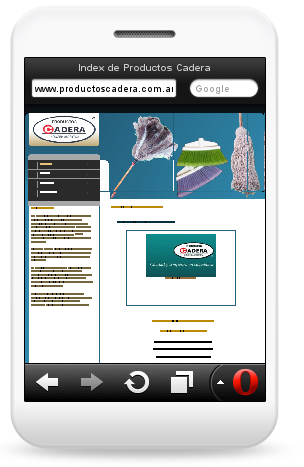
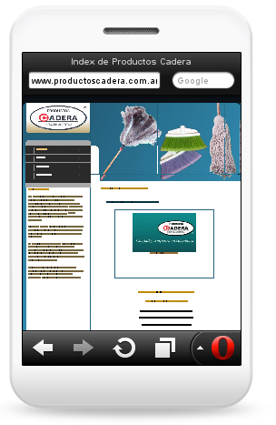

Sitios Compatibles entre navegadores
Pablo Luis Botta
MCT - UTN FRRO
2011 - Rosario
Pablo Luis Botta
MCT - UTN FRRO
2011 - Rosario
Un sitio compatible entre navegadores es aquel que se visualiza y funciona de forma correcta en todos los navegadores presentes en el mercado.
Pero que vendría a ser esto?
Ejemplo de sitio compatible entre navegadores:
Ejemplo de sitios NO compatible entre navegadores:
¿Por qué?
Desde la exploción de la web, diseñadores y desarrolladores han buscado la forma de alcanzar que sus sitios sean compatibles entre navegadores.
Escalabilidad y mantenimiento.
En muchos sistemas e incluso en la web se ha usado este pricipio de diseño.
 



Se pueden utilzar hoy?

Si alguna propiedad falla el selector se sigue aplicando, si algún selector de la lista de selectores falla no se aplica la regla.
/*RECORDAR LA CASCADA*/
.work-slider-container {
background:#334B01;
background-image: url('images/gradient.png') repeat-y top left;
background-image: linear-gradient(top, #334B01, #B4DC00);
}
.works img
{
border: solid #FFFFFF; /*BLANCO*/
border: solid rgba(255, 255, 255, .4); /*BLANCO TRANSPARENTADO*/
border-width:9px 0;
}
/*OJO CON ESTO*/
p.language, p[lang] {
color:red;
}
/*ALGUNOS NABEGADORES NO VAN A APLICARLA*/
Las caracteristicas que se pueden detectar son: width, height, device-width, device-height, orientation, aspect-ratio, device-aspect-ratio, color, color-index, monochrome, resolution, scan, grid
El primer filtro es si el navegador la soporta o no la soporta (El mismo orden que las reglas).
@media screen and (min-width: 1270px) {
.inner
{
width:80%;
margin:auto;
}
}
@media screen and (orientation: landscape) {
.inner
{
width:50%;
margin:auto;
}
}
Uso en CSS:
.fontface .header h1, .fontface header h1{
font-family: 'Yellowtail', cursive;
}
.no-cssgradients .work-slider-container {
background-image: url('images/gradient.png') repeat-y top left;
}
.cssgradients .work-slider-container {
background-image: linear-gradient(top, #334B01, #B4DC00);
}
Uso en Javascript:
if (Modernizr.touch){
// bind to touchstart, touchmove, etc and watch `event.streamId`
} else {
// bind to normal click, mousemove, etc
}
if (jQuery) {
$(document).ready(function(){
$('.flexslider').flexslider({controlNav: false, pauseOnHover: true });
$('.scrollPage').click(function() {
var elementClicked = $(this).attr("href");
var destination = $(elementClicked).offset().top;
$("html:not(:animated),body:not(:animated)").animate({ scrollTop: destination-50}, 500 );
window.location.hash = '#'+ elementClicked.split('#')[1];
return false;
});
$('a[rel=external]').click(function (event){
event.preventDefault();
window.open($(this).attr('href'));
});
});
}
{kind=link}
{kind=link}
{kind=link}
{kind=link}